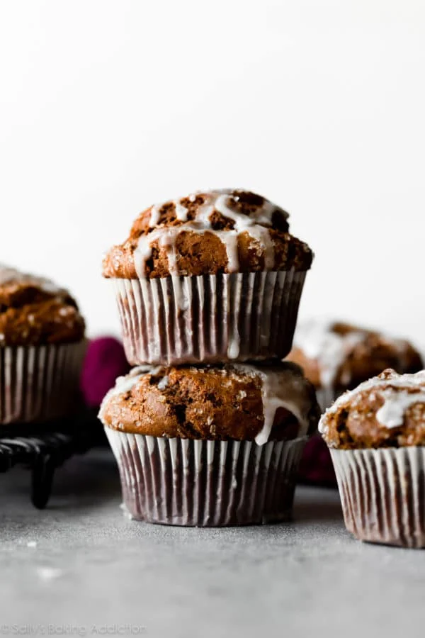

Gingerbread Muffin

These jolly gingerbread muffins fit literally any and all holiday
occasions.
Meet the wonderfully spiced and extra moist gingerbread muffins with lemon
glaze. Have you ever had the combination of lemon and gingerbread before?
The pairing may seem odd, but this combination of flavors WORKS. Spicy
sweet gingerbread paired with bright & fresh lemon make an unbeatable pair
and if you haven't tried the two together, you are in for a real treat
today.
These gingerbread muffins have beautiful crackly tops, robust spice
flavor, and are finished with zippy lemon glaze. Feel free to skip the
glaze for plain gingerbread muffins.
Ingredients
Gingerbread muffins
- 1/2 cup (1 stick or 115g) unsalted butter
- 3/4 cup (234g) dark molasses*
- 2 and 2/3 cups (334g) all purpose flour (spoon & leveled)
- 1 and 1/2 teaspoons baking soda
- 1/4 teaspoon salt
- 1 and 1/2 teaspoons ground cinnamon
- 1 and 1/4 teaspoons ground ginger
- 1/2 teaspoon ground cloves
- 1/2 cup (100g) packed light or dark brown sugar
- 1 large egg, at room temperature
- 1/2 cup (120g) plain yogurt or sour cream, at room temperature
- 1/2 cup (120ml) milk, at room temperature
Lemon glaze
- 1 cup (120g) confectioners' sugar (or more, as needed)
- 2 Tablespoons fresh lemon juice
- Tablespoon (15ml) milk
Steps
-
Preheat oven to 425°F (218°C). Generously grease a muffin pan with
butter or nonstick spray or line with muffin liners. Set aside.
-
Cut the butter into smaller pieces so it melts easier. In a large
microwave-safe bowl, heat the butter and molasses together in the
microwave on high for about 1 minute. Stir until thoroughly mixed
together. Set aside to slightly cool as you mix the dry ingredients
together.
-
Whisk the flour, baking soda, salt, cinnamon, ginger, and cloves
together.
-
Into the molasses/butter mixture, whisk the brown sugar, egg, yogurt,
and milk until all wet ingredients are combined. Pour wet ingredients
into dry ingredients and mix until *just* combined. Do not over-mix.
Batter will be thick and a little lumpy.
-
Divide batter among prepared muffin pan, filling all the way to the top.
Sprinkle with coarse sugar (for added crunch, recommended!), if desired.
Bake at 425°F for 5 minutes, then, keeping the muffins in the oven,
reduce the oven temperature to 350°F (177°C) and continue to bake for
15-16 minutes until the tops are cracked and centers are set. Use a
toothpick to test. Allow to cool for 5-10 minutes in pan before glazing
and serving.
-
Make the glaze: As the muffins cool, prepare your lemon glaze by mixing
all of the ingredients together in a medium bowl. If desired, add more
confectioners' sugar to thicken or more milk to thin out. Drizzle on top
of warm muffins. Icing will set as the muffins cool, so these are great
for storing and/or transporting.
-
Cover leftover (iced or plain) muffins and store at room temperature for
2 days or in the refrigerator for 1 week. Muffins (iced or plain) freeze
well for up to 3 months. Thaw in the refrigerator or on the counter.
back to Home